Mathematical Foundations of AI & ML
Unit 12: Uncertainty in Predictions
FAU Erlangen-Nürnberg
Title + Unit 12 positioning
- Unit 11 discovered structure in data. Unit 12 asks: how confident are our predictions?
- Single-point predictions are insufficient for engineering decisions.
- We need principled uncertainty quantification — from Bayesian inference to Gaussian Processes.
Learning outcomes for Unit 12
By the end of this lecture, students can:
- derive the Bayesian predictive distribution and interpret the variance decomposition,
- describe the evidence framework and the concept of effective parameters,
- define a GP, derive its posterior, and interpret uncertainty bands,
- compare practical UQ methods: MC Dropout, ensembles, and MDNs.
Why point predictions are not enough
- A model predicting 450 MPa tensile strength is useless without knowing if the uncertainty is \(\pm 5\) or \(\pm 100\) MPa.
- In safety-critical applications, the uncertainty drives the decision, not the prediction.
- Overconfident models are more dangerous than inaccurate ones.
Recall: aleatory vs epistemic uncertainty (Unit 8)
- Aleatory: inherent noise in the data-generating process — irreducible.
- Epistemic: uncertainty from limited data or model capacity — reducible.
- A complete UQ framework must quantify and distinguish both types.
- As training data grows, epistemic uncertainty should shrink; aleatory uncertainty should not.
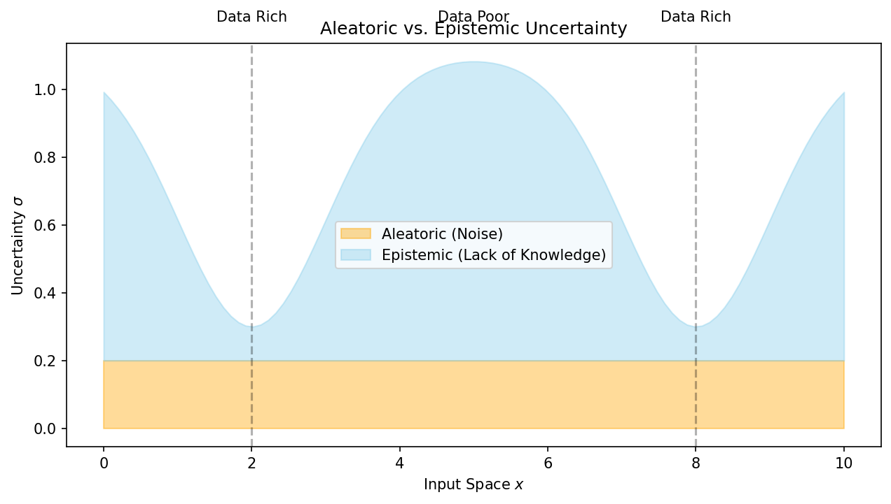
The Bayesian predictive distribution
- Instead of predicting with a single \(\hat{\theta}\), integrate over all plausible \(\theta\):
\[ p(\mathbf{y}^* | \mathbf{x}^*, \mathcal{D}) = \int p(\mathbf{y}^* | \mathbf{x}^*, \theta) \, p(\theta | \mathcal{D}) \, d\theta \]
- This accounts for parameter uncertainty — the full posterior contributes to the prediction.
- The result is a distribution over predictions, not a single point.
- As data increases (1 → 2 → 20 obs.), the predictive band narrows.
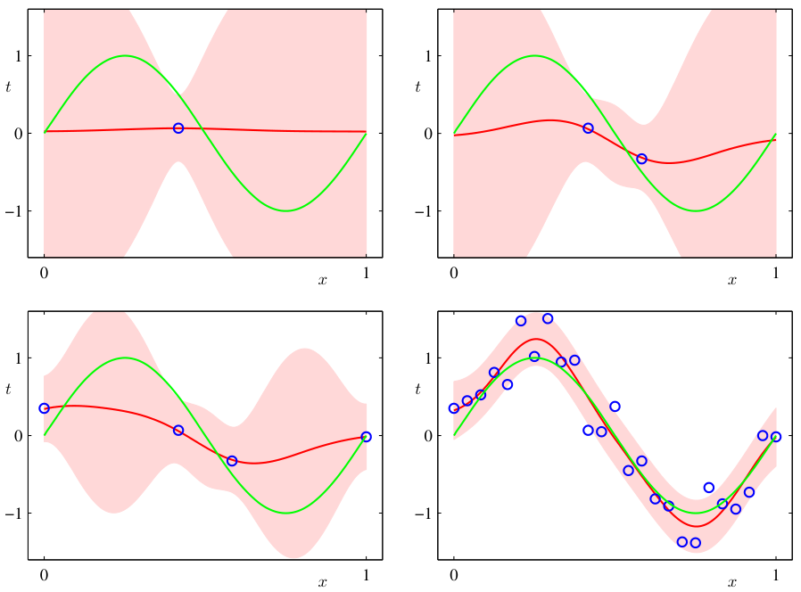
Variance decomposition
\[ \text{Var}[\mathbf{y}^*] = \underbrace{\mathbb{E}_\theta[\sigma^2(\theta)]}_{\text{aleatory}} + \underbrace{\text{Var}_\theta[\boldsymbol{\mu}(\theta)]}_{\text{epistemic}} \]
- Aleatory component: average noise variance across parameter values.
- Epistemic component: how much the prediction mean varies across plausible parameters.
- The epistemic term shrinks with more data; the aleatory term does not.
Point estimates vs full distributions
| Approach | Output | Uncertainty | Cost |
|---|---|---|---|
| MLE/MAP | Single \(\hat{\mathbf{y}}\) | None (or ad-hoc) | Low |
| Bayesian (exact) | Full \(p(\mathbf{y}^*|\mathbf{x}^*,\mathcal{D})\) | Principled | High |
| Bayesian (approx.) | Approximate distribution | Approximate | Moderate |
When uncertainty matters most
- Safety-critical: structural components, medical devices — failure consequences are severe.
- Expensive experiments: each new alloy costs $10K to synthesize — guide experiments with uncertainty.
- Extrapolation: new compositions, extreme conditions — the model is outside its training domain.
- Active learning: acquire data where uncertainty is highest for maximum information gain.
Practical UQ: a taxonomy
- Exact Bayesian: Gaussian Processes — closed-form posterior, principled, but \(O(N^3)\).
- Approximate Bayesian: MC Dropout, variational inference — scale to large data, approximate.
- Frequentist ensembles: deep ensembles — no Bayesian formalism, practical uncertainty from disagreement.
- Direct prediction: MDNs — predict distribution parameters directly.
Roadmap of today’s 90 min
- 10–25 min: Bayesian predictive distribution and variance decomposition.
- 25–40 min: Evidence framework, marginal likelihood, effective parameters.
- 40–60 min: Gaussian Processes — definition, posterior, uncertainty bands.
- 60–75 min: Practical UQ — MC Dropout, ensembles, MDNs, stochastic enrichment.
- 75–85 min: Calibration and engineering applications.
The marginal likelihood (evidence)
\[ p(\mathcal{D} | \mathcal{M}) = \int p(\mathcal{D} | \theta, \mathcal{M}) \, p(\theta | \mathcal{M}) \, d\theta \]
- Measures how well model \(\mathcal{M}\) explains the data, averaging over all parameter values.
- Automatically balances fit (likelihood) and complexity (prior spread) [@murphy2012machine].
Evidence as automatic Occam’s razor
- Simple model \(\mathcal{M}_1\): prior concentrated on few parameter values → high evidence if data is simple.
- Complex model \(\mathcal{M}_3\): prior spread thinly over many parameters → lower evidence unless data demands complexity.
- Just-right model \(\mathcal{M}_2\): highest evidence at observed \(\mathcal{D}_0\).
- The evidence automatically penalizes unnecessary complexity — no need for explicit regularization.
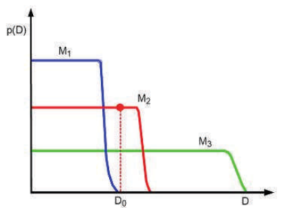
Model comparison via evidence
- Bayes factor: \(\frac{p(\mathcal{M}_1 | \mathcal{D})}{p(\mathcal{M}_2 | \mathcal{D})} = \frac{p(\mathcal{D} | \mathcal{M}_1)}{p(\mathcal{D} | \mathcal{M}_2)} \cdot \frac{p(\mathcal{M}_1)}{p(\mathcal{M}_2)}\).
- With equal model priors: the model with higher evidence is preferred.
- Unlike cross-validation, this uses all the data for both fitting and evaluation.
- Evidence selects \(d{=}1\) (linear) over \(d{=}2,3\) for small \(N{=}5\); at \(N{=}30\) it correctly selects \(d{=}2\).
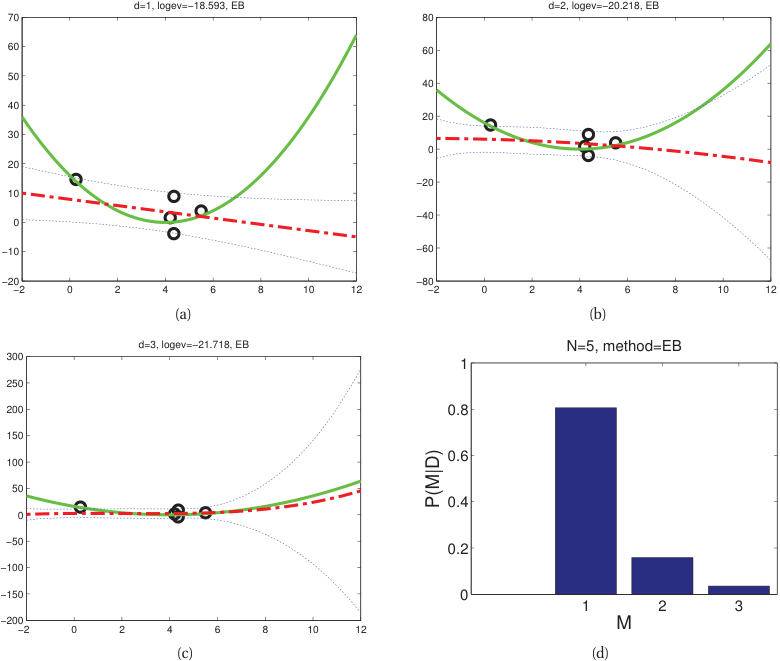
Effective number of parameters
\[ \gamma = \sum_i \frac{\lambda_i}{\lambda_i + \alpha} \]
- \(\lambda_i\): eigenvalues of the data precision matrix. \(\alpha\): prior precision.
- \(\gamma \leq\) total number of parameters. Often \(\gamma \ll\) total parameters.
- Interpretation: only \(\gamma\) parameters are effectively constrained by the data [@bishop2006pattern].
Empirical Bayes
- Instead of fixing hyperparameters (prior variance, noise level), optimize them by maximizing the evidence.
- \(\hat{\alpha}, \hat{\sigma}^2 = \arg\max_{\alpha, \sigma^2} \log p(\mathcal{D} | \alpha, \sigma^2)\).
- This is a principled alternative to cross-validation for hyperparameter selection.
- Also called type-II maximum likelihood.
Checkpoint: evidence interpretation
- Question: Model A has 100 parameters and log-evidence −500. Model B has 10 parameters and log-evidence −480. Which is preferred?
- Answer: Model B — higher evidence means it explains the data better relative to its complexity.
What is a Gaussian Process?
- A GP is a distribution over functions: \(f \sim \mathcal{GP}(m(\mathbf{x}), k(\mathbf{x}, \mathbf{x}'))\).
- Any finite collection of function values \([f(\mathbf{x}_1), \dots, f(\mathbf{x}_N)]\) is jointly Gaussian.
- The GP is fully specified by its mean function \(m(\mathbf{x})\) and kernel function \(k(\mathbf{x}, \mathbf{x}')\).
GP as infinite-dimensional Gaussian
- A multivariate Gaussian is a distribution over vectors.
- A GP extends this to a distribution over functions (infinite-dimensional objects).
- The kernel function \(k(\mathbf{x}, \mathbf{x}')\) plays the role of the covariance matrix.
- This is a Bayesian nonparametric model — complexity grows with data [@murphy2012machine].
Mean function m(x)
- \(m(\mathbf{x}) = \mathbb{E}[f(\mathbf{x})]\): the expected function value at each input.
- Common choice: \(m(\mathbf{x}) = 0\) (zero-mean prior).
- Can encode prior knowledge: \(m(\mathbf{x}) = a\mathbf{x} + b\) for a linear trend.
- The mean function is updated to the posterior mean after observing data.
Kernel (covariance) function k(x, x’)
- \(k(\mathbf{x}, \mathbf{x}') = \text{Cov}[f(\mathbf{x}), f(\mathbf{x}')]\): encodes the correlation between function values.
- The kernel determines the properties of sampled functions:
- Smoothness, periodicity, length scale, amplitude.
- The kernel must be positive semi-definite (valid covariance matrix for any finite set of points).
The RBF (squared exponential) kernel
\[ k(\mathbf{x}, \mathbf{x}') = \sigma_f^2 \exp\!\left(-\frac{\|\mathbf{x} - \mathbf{x}'\|^2}{2\ell^2}\right) \]
- Length scale \(\ell\): controls how far apart inputs can be and still be correlated.
- Signal variance \(\sigma_f^2\): controls the amplitude of function variation.
- Produces infinitely differentiable (very smooth) functions.
Other kernels
- Matérn: \(k(\mathbf{x},\mathbf{x}') \propto\) Bessel function — adjustable smoothness via parameter \(\nu\).
- Periodic: captures repeating patterns.
- Linear: \(k(\mathbf{x},\mathbf{x}') = \sigma^2 \mathbf{x}^\top \mathbf{x}'\) — equivalent to Bayesian linear regression.
- Composite: sums and products of kernels combine properties (e.g., smooth + periodic).
GP prior: sampling functions
- Before seeing data, sample functions from the prior: \(f \sim \mathcal{GP}(0, k)\).
- With RBF kernel: smooth, random functions with length scale \(\ell\) and amplitude \(\sigma_f\).
- Different kernel parameters produce visually different function families.
- The prior encodes our beliefs about what functions are plausible.
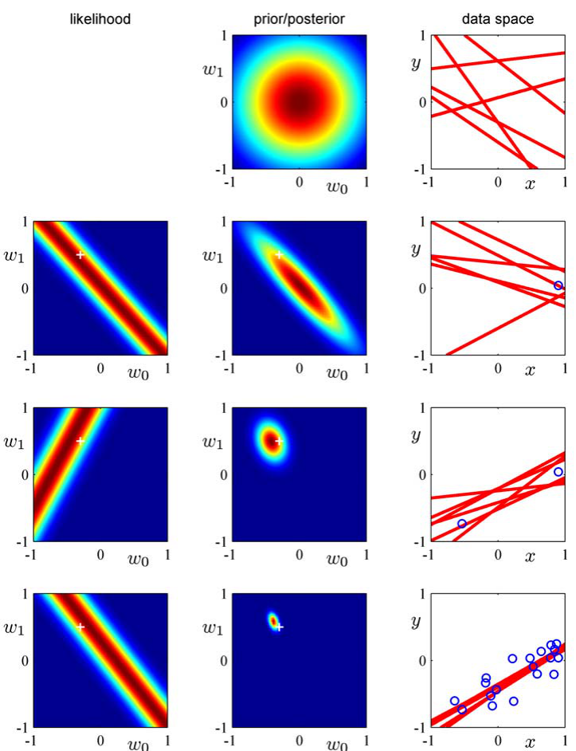
GP posterior: conditioning on data
- Observe \(\mathcal{D} = \{(\mathbf{x}_i, y_i)\}_{i=1}^N\) with \(y_i = f(\mathbf{x}_i) + \epsilon\), \(\epsilon \sim \mathcal{N}(0, \sigma_n^2)\).
- The posterior \(f | \mathcal{D}\) is also a GP with updated mean and covariance.
- The posterior passes through (or near) the training points.
- Away from data, the posterior reverts to the prior.
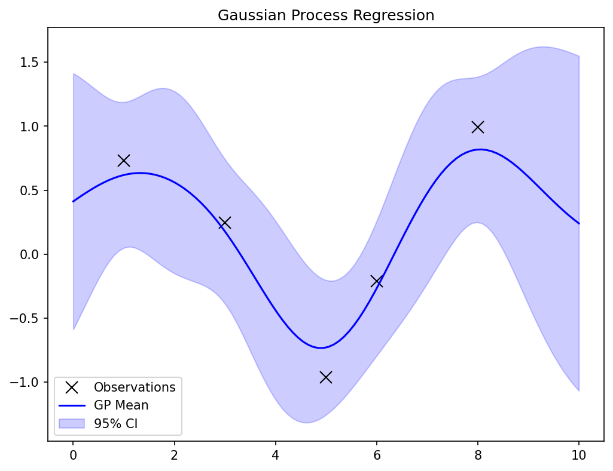
GP posterior: closed-form formulas
\[ \boldsymbol{\mu}^*(\mathbf{x}^*) = \mathbf{k}_*^\top (\mathbf{K} + \sigma_n^2 \mathbf{I})^{-1} \mathbf{y} \]
\[ \sigma^{*2}(\mathbf{x}^*) = k(\mathbf{x}^*, \mathbf{x}^*) - \mathbf{k}_*^\top (\mathbf{K} + \sigma_n^2 \mathbf{I})^{-1} \mathbf{k}_* \]
- \(\mathbf{K}\): kernel matrix \([k(\mathbf{x}_i, \mathbf{x}_j)]_{N \times N}\). \(\mathbf{k}_*\): vector \([k(\mathbf{x}^*, \mathbf{x}_i)]\).
- The key operation is inverting \((\mathbf{K} + \sigma_n^2 \mathbf{I})\) — cost \(O(N^3)\).
GP posterior: interpretation
- Mean \(\boldsymbol{\mu}^*(\mathbf{x}^*)\): best prediction — a weighted combination of training outputs.
- Variance \(\sigma^{*2}(\mathbf{x}^*)\):
- Small near training data (low epistemic uncertainty).
- Large far from training data (high epistemic uncertainty).
- Approaches prior variance \(\sigma_f^2\) as distance from data grows.
GP uncertainty bands
- Plot \(\boldsymbol{\mu}(\mathbf{x}) \pm 2\sigma(\mathbf{x})\): the 95% credible band.
- Bands are narrow near observed data (confident predictions).
- Bands widen away from data (uncertain predictions).
- This is honest uncertainty — the GP admits what it does not know.
GP hyperparameter learning
- Optimize kernel hyperparameters \(\ell, \sigma_f, \sigma_n\) by maximizing the log marginal likelihood:
\[ \log p(\mathbf{y} | \mathbf{X}) = -\frac{1}{2}\mathbf{y}^\top(\mathbf{K} + \sigma_n^2 \mathbf{I})^{-1}\mathbf{y} - \frac{1}{2}\log|\mathbf{K} + \sigma_n^2 \mathbf{I}| - \frac{N}{2}\log 2\pi \]
- Three terms: data fit, complexity penalty, normalization.
- Gradient-based optimization (L-BFGS is common).
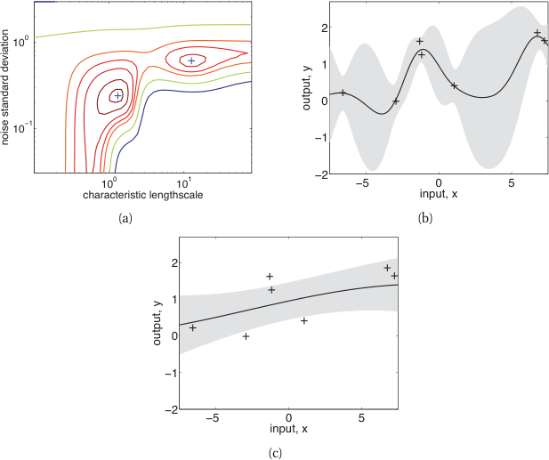
Length scale effect
- Short \(\ell\): wiggly functions, fits local patterns (and possibly noise).
- Long \(\ell\): smooth functions, captures global trends (may miss local structure).
- Optimal \(\ell\): balances data fit and smoothness — determined by marginal likelihood.
- Same 20 noisy training points; three different \(\ell\) choices give very different posteriors.
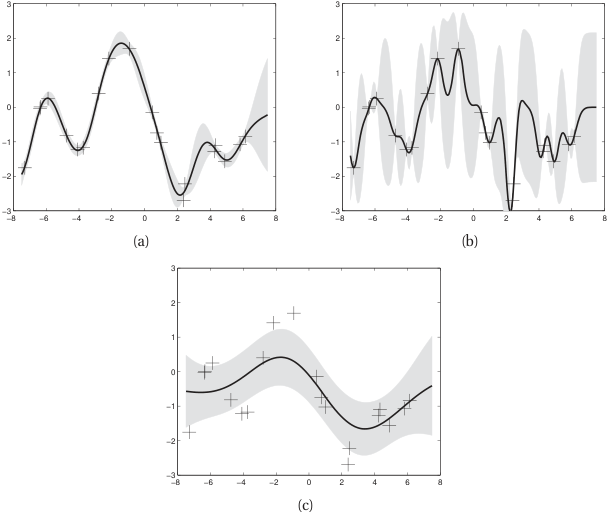
GP: computational cost
- Training: \(O(N^3)\) for matrix inversion + \(O(N^2)\) storage.
- Prediction: \(O(N)\) per test point (after training).
- Practical limit: \(N \approx 10^3 - 10^4\) for exact GPs.
- Approximations exist for larger datasets: sparse GPs, inducing points, random features.
GP: strengths and limitations
Strengths
- Principled uncertainty quantification
- Automatic complexity control (evidence)
- Interpretable hyperparameters
- Works well with small data
Limitations
- \(O(N^3)\) training cost
- Kernel design requires domain knowledge
- Gaussian assumption may be limiting
- Scales poorly to high-dimensional inputs
Checkpoint: GP prediction
- Question: A GP is trained on 10 data points. You query a point very far from all training data. What happens to the uncertainty?
- Answer: The posterior variance grows toward the prior variance \(\sigma_f^2\). The GP honestly reports high uncertainty in unexplored regions.
Mixture-Density Networks (MDNs)
- A standard NN outputs a single \(\hat{\mathbf{y}}\) (or \(\hat{y}\)). An MDN outputs parameters of a mixture of Gaussians:
\[ p(\mathbf{y}|\mathbf{x}) = \sum_{k=1}^{K} \pi_k(\mathbf{x}) \, \mathcal{N}(\mathbf{y} | \boldsymbol{\mu}_k(\mathbf{x}), \sigma_k^2(\mathbf{x})) \]
- The network predicts mixing coefficients \(\omega\), means \(\mu\), and variances \(\sigma\) — all functions of input \(\mathbf{x}\) [@neuer2024machine].

MDN: capturing multi-modal uncertainty
- Standard regression assumes unimodal output distribution.
- MDNs can represent branching predictions: “this composition could yield phase A or phase B.”
- The number of mixture components \(K\) is a design choice.
- Particularly useful for inverse problems with multiple solutions.
MC Dropout for uncertainty estimation
- Standard dropout: randomly zero neurons during training.
- MC Dropout: keep dropout active at test time.
- Run \(T\) stochastic forward passes → \(T\) predictions \(\{\hat{y}_1, \dots, \hat{y}_T\}\).
- Mean = prediction. Variance across samples ≈ epistemic uncertainty.
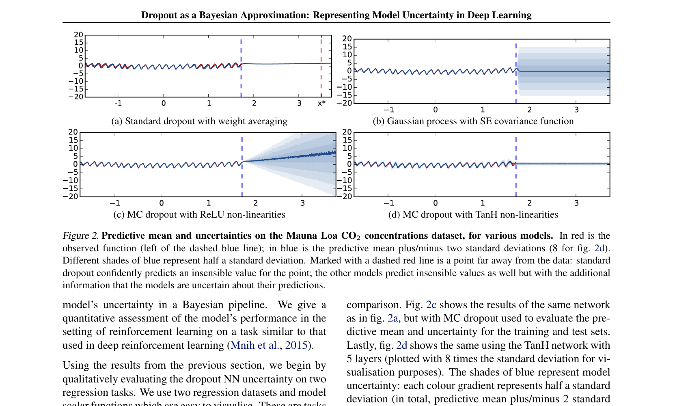
MC Dropout: interpretation
- Each forward pass uses a different randomly thinned network.
- Equivalent to sampling from an approximate posterior over network architectures.
- Theoretical connection to variational inference [@gal2016dropout].
- Advantage: zero additional training cost — uncertainty is free at test time.
Deep ensembles
- Train \(M\) independent networks (different random initializations, same architecture).
- Each network produces a prediction \(\hat{y}_m\).
- Mean: \(\bar{y} = \frac{1}{M}\sum_m \hat{y}_m\). Variance: \(\frac{1}{M}\sum_m (\hat{y}_m - \bar{y})^2\).
- Empirically produces well-calibrated uncertainties. Cost: \(M\times\) training [@lakshminarayanan2017simple].
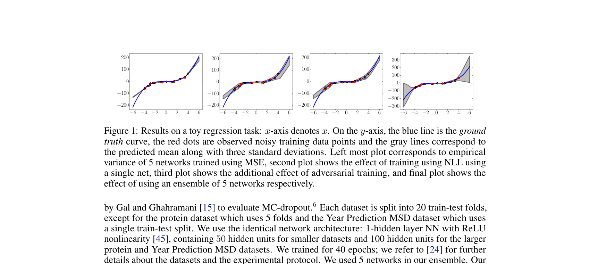
Conformal prediction: distribution-free uncertainty with finite-sample guarantee
What conformal prediction is.
- A wrapper that turns any point predictor into a set/interval predictor with a finite-sample coverage guarantee.
- Promise: pick miscoverage \(\alpha = 0.1\) — the prediction interval covers the true value at least \(1 - \alpha = 90\%\) of the time, on average. No assumption on the data distribution; no assumption on the model.
- Only assumption: exchangeability of the calibration and test data (usually true if both are i.i.d. from the same source).
Why everyone uses it in 2026.
- Model-agnostic. Wraps NNs, GPs, GBMs, even hand-crafted models.
- Finite-sample, not asymptotic. Coverage holds for \(n=50\), not just \(n \to \infty\).
- Cheap. A calibration pass over \(\sim 1000\) held-out points — no retraining.
- Composable with all of §12 so far: take any MDN / MC-dropout / ensemble point estimate and conformalize it for rigorous coverage [@angelopoulos2021gentle].
The trade-off: guaranteed coverage is marginal — averaged over the test distribution. Conditional coverage (per input \(\mathbf{x}\)) is harder; CQR is the standard fix.
Split conformal in 5 lines
The algorithm. Given a trained predictor \(\hat f\) and a separate calibration set \(\{(\mathbf{x}_i, y_i)\}_{i=1}^{n}\):
- Compute nonconformity scores \(s_i = |y_i - \hat f(\mathbf{x}_i)|\) for \(i = 1, \dots, n\).
- Compute the empirical quantile \[ \hat q = \mathrm{Quantile}\!\left(\{s_i\};\; \tfrac{\lceil (n+1)(1-\alpha) \rceil}{n}\right). \]
- For a new \(\mathbf{x}\), output the interval \[ C(\mathbf{x}) = \big[\hat f(\mathbf{x}) - \hat q,\; \hat f(\mathbf{x}) + \hat q\big]. \]
For any exchangeable new \((X, Y)\): \[\Pr\!\left(Y \in C(X)\right) \geq 1 - \alpha.\]
The 5-line Python.
# Held-out calibration set (x_cal, y_cal);
# trained model `model`; alpha = 0.1
scores = np.abs(y_cal - model.predict(x_cal))
n = len(scores)
qhat = np.quantile(
scores, np.ceil((n + 1) * (1 - alpha)) / n)
# At test time:
def conformal_interval(x):
yhat = model.predict(x)
return yhat - qhat, yhat + qhat\(\hat q\) is a single scalar. The interval width is the same for every test point in vanilla split CP — exactly the per-input coverage problem CQR fixes next.
Conformalized Quantile Regression (CQR) — adaptive interval widths
Why vanilla split CP is too coarse.
- \(\hat q\) is the same constant for every \(\mathbf{x}\).
- Easy inputs get unnecessarily wide intervals; hard inputs may still under-cover conditionally.
- We want intervals that widen near hard regions of input space — like the heteroscedastic Gaussian head from Unit 8.
CQR fix [@romano2019cqr].
- Train a quantile-regression model predicting \(\hat q_{\alpha/2}(\mathbf{x})\) and \(\hat q_{1-\alpha/2}(\mathbf{x})\) — e.g., a NN with two heads using the pinball loss, or a quantile GBM.
- Compute conformity scores \[ s_i = \max\!\big(\hat q_{\alpha/2}(\mathbf{x}_i) - y_i,\; y_i - \hat q_{1-\alpha/2}(\mathbf{x}_i)\big). \]
- Take \(\hat q = \mathrm{Quantile}\!\left(s_i;\; \tfrac{(n+1)(1-\alpha)}{n}\right)\), then output \[ C(\mathbf{x}) = \big[\hat q_{\alpha/2}(\mathbf{x}) - \hat q,\; \hat q_{1-\alpha/2}(\mathbf{x}) + \hat q\big]. \]
- Marginal coverage is preserved; intervals adapt to local input difficulty.
In 2026 practice, the default UQ stack for a regression NN is: quantile heads + CQR. Calibrate once, ship with finite-sample coverage.
Stochastic enrichment
- Add noise to inputs during prediction: \(\tilde{\mathbf{x}} = \mathbf{x} + \boldsymbol{\epsilon}\), \(\boldsymbol{\epsilon} \sim \mathcal{N}(\mathbf{0}, \boldsymbol{\Sigma}_\epsilon)\).
- Run multiple predictions with different noise realizations.
- High variance across perturbed predictions = model is sensitive = high uncertainty.
- Matches real-world measurement noise propagation [@neuer2024machine].

Calibration: are uncertainties trustworthy?
- A model is well-calibrated if predicted \(p\)% confidence intervals contain \(p\)% of test points.
- Calibration plot: predicted confidence level vs observed coverage.
- Perfect calibration = diagonal line.
- Overconfident: intervals too narrow (common in NNs). Underconfident: intervals too wide.
- Modern deep NNs are systematically overconfident — confidence exceeds accuracy [@guo2017calibration].
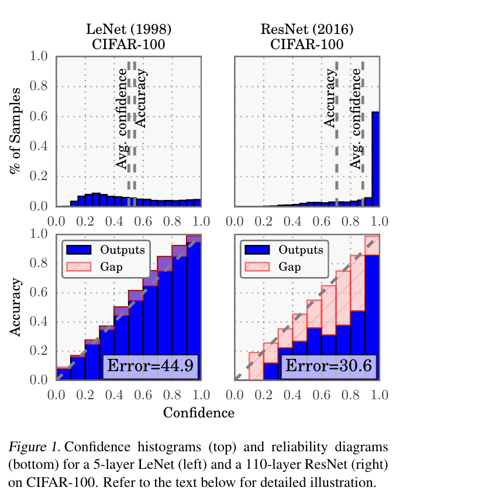
Recalibration methods
- Temperature scaling: divide logits by a learned temperature \(T\) before softmax.
- Platt scaling: fit a logistic regression on validation predictions.
- Isotonic regression: non-parametric calibration mapping.
- Applied post-hoc on a held-out calibration set — does not change the model.
Comparison of UQ methods
| Method | Type | Cost | Calibration | Scalability |
|---|---|---|---|---|
| GP | Exact Bayesian | \(O(N^3)\) | Excellent | Small \(N\) |
| MC Dropout | Approx. Bayesian | \(T \times\) inference | Good | Any |
| Deep ensemble | Frequentist | \(M \times\) training | Very good | Any |
| MDN | Direct | 1× training | Requires tuning | Any |
| Conformal / CQR | Distribution-free wrapper | 1 calibration pass (\(\sim 10^3\) pts) | Guaranteed (finite-sample, marginal) | Any (model-agnostic) |
- Only Conformal / CQR is distribution-free and model-agnostic — it wraps any row above to inherit a coverage guarantee [@angelopoulos2021gentle].
Checkpoint: choosing a UQ method
- Small dataset, need exact UQ: Gaussian Process.
- Large dataset, budget for training: deep ensemble.
- Large dataset, need cheap inference: MC Dropout.
- Multi-modal outputs: Mixture-Density Network.
- Need a coverage guarantee (regulated / safety-critical): wrap your favourite predictor with Conformal Prediction (CQR for adaptive widths).
Materials example: GP for composition-property mapping
- GP regression from alloy composition (5 features) to yield strength.
- 50 training samples from expensive tensile tests.
- GP provides uncertainty bands → compositions with high uncertainty are targets for next experiments.
- Active learning with GP uncertainty reduces required experiments by 40%.
Materials example: active learning with GP uncertainty
- Goal: map the composition-property landscape with minimum experiments.
- Strategy: train GP, identify input with highest uncertainty, synthesize and test it.
- Iterate: retrain GP, select next experiment, repeat.
- This is Bayesian optimization applied to materials discovery.
[PLACEHOLDER: Active Learning animation/sequence] - Panel 1: Initial GP with high uncertainty - Panel 2: Selection of point with max variance - Panel 3: Updated GP with reduced uncertainty after adding point
Materials example: MDN for multi-phase prediction
- Some alloy compositions can yield different crystallographic phases depending on processing.
- A standard NN predicts the average — meaningless for bimodal distributions.
- An MDN with 2 Gaussian components correctly captures both possible phases and their probabilities.

Physics-informed uncertainty reduction (preview of Unit 13)
- Embedding physical constraints (conservation laws, symmetries) reduces epistemic uncertainty.
- The model is forced to respect known physics → fewer plausible functions → tighter uncertainty.
- This is equivalent to a more informative prior in the Bayesian framework.
Lecture-essential vs exercise content split
- Lecture: Bayesian prediction, evidence framework, GP derivation, practical UQ taxonomy, calibration.
- Exercise: GP implementation from scratch, kernel hyperparameter exploration, ensemble comparison, MDN bonus.
Exercise setup summary
- Implement GP regression (RBF kernel) in NumPy: compute posterior mean and variance.
- Compare GP uncertainty bands with predictions from an NN ensemble (3 networks).
- Vary length scale \(\ell\) and observe effect on fit and uncertainty.
- Bonus: implement a simple MDN with 2 Gaussian components in PyTorch.
Exam-aligned summary: 10 must-know statements
- The Bayesian predictive distribution integrates over parameter uncertainty.
- Total prediction variance = aleatory variance + epistemic variance.
- The marginal likelihood (evidence) measures model fit with automatic complexity penalty.
- A GP is a distribution over functions specified by mean and kernel functions.
- The GP posterior has closed-form mean and variance (for Gaussian likelihood).
- GP uncertainty grows away from training data — honest epistemic uncertainty.
- Kernel hyperparameters (length scale, signal variance) control GP behavior.
- MC Dropout approximates Bayesian inference by sampling sub-networks at test time.
- Deep ensembles provide uncertainty via disagreement among independently trained models.
- Calibration plots verify that predicted confidence matches observed accuracy.
Continue
References + reading assignment for next unit
- Required reading before Unit 13:
- Murphy: Ch. 5, 15
- Neuer: Ch. 6.4
- Optional depth:
- Bishop: Ch. 3.5 (evidence framework)
- Rasmussen & Williams: GP reference text
- Next unit: Physics-Informed Learning — embedding domain knowledge into ML models.